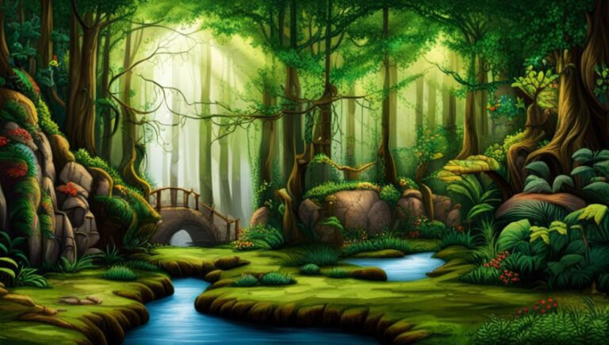

If you’ve somehow found yourself here first,return to the start of the adventure.

In the small town of Willowbrook there have been whispers of strange occurrences happening in the nearby enchanted forest. Many have ventured in but few have returned, and those who have come back speak of magical creatures and hidden treasures. You decide to explore the enchanted forest and uncover its secrets.